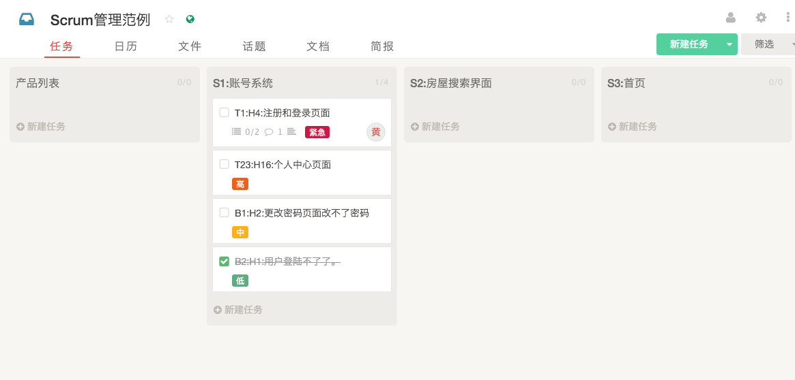
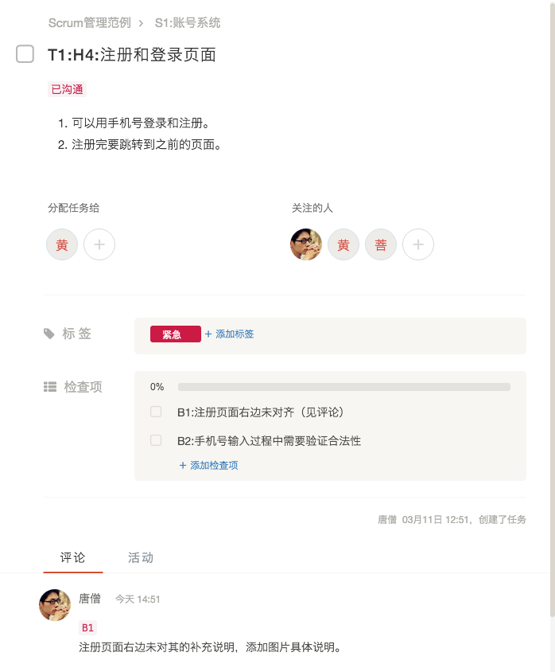

摘要：此文为Scrum极限编程在worktile工具中的应用规范。需要读者对Scrum极限编程有基本的认识，对worktile有过操作经历。因为worktile并不是专门为scrum设计的工具，所以在很多方面需要我们自己规范自己遵守。此篇文章，结合了worktile自身特点，整理出了一份操作规范。
任务看板
任务看板分为两种：
- 产品列表。显示名称为
产品列表。此列表是一个愿望列表，表示希望在将来的产品中看到的功能。任何人都可以向此列表中添加项目。 - 冲刺列表。显示名称为
S5:冲刺目标名称。此列表代表一个冲刺周期中，应该完成的任务。已完成的冲刺周期将会逐渐归档。为了方便回溯查找，我们将保留3个已完成的冲刺列表。

任务字段
- 名称：
T(/B){id}:H{hour}:{任务名称}。举例：T1:H4:注册和登录页面，B1:H2:上个冲刺周期有个Bug。- 任务类型：
T表示普通任务（Task）；B表示Bug，表示已结束的冲刺周期中出现的问题。 {id}表示任务的唯一ID,为纯数字，从1开始递增。大家在添加任务的时候，请查看下当前列表的最大任务ID号。{hour}表示完成该任务的计划时间，单位为小时。{任务名称}是该任务的简短描述，让同事看到名称，能想起来是哪件事情。
- 任务类型：
- 标签。分为
低，中，高，紧急四个等级，优先级依次底层。完成时从高往低开始做。 - 关注的人。为所有与此相关的人。
- 分配任务给。为任务当前的执行者。一般一个任务会涉及多个参与者，所有的参与者在“关注的人”中指定。当一个人做完之后会交接到下一个人。而当前任务执行者，指的是任务的当前处理者。当前任务的处理者完成自己的那部分任务后，或指给项目负责人处理，或指给下一个处理人。
- 截止时间。冲刺周期开始时，为每个任务指定截止时间为本周期结束日。在每日站立会议中，讨论接下来一到两天的任务，再次设定这些任务的截止日期。
- 任务描述。详细的任务描述，执行人可通过任务描述详细的了解该怎么执行。如果任务创建者和执行者已经进行过口头沟通，需在任务描述中标注
已沟通，并把要点写上，方便以后回忆。 - 检查项。表示此任务的补充任务。在冲刺周期还未结束时，用来对执行者已经完成的任务进行补充。比如，在开发过程中，执行者已经完成该任务，但任务发起者发现有些细节跟最初设计的不同，则需要重新打开此任务，在“检查项”中写明那些地方不对，需要继续修改。
- 检查项名称。每一个检查项需要以格式
B{ID}:{任务名称}（见评论）来命名。如果需要补充说明，请添加在评论区中，并在检查项名称的末尾加上（见评论）。 - 检查项补充说明。如果检查项描述比较复杂，可在评论区中添加对此检查项的描述。评论区的说明内容也需要以
B{ID}开始，与检查项的ID对应，以便其它同事快速查找。
- 检查项名称。每一个检查项需要以格式

任务操作
上述已经规范过的操作规范，不再赘述。补充以下操作规范：
- 任务管理者，需要每日整理任务看板，使得：
- 已完成的任务拖动到冲刺列表的末尾。
- 所有的任务按照优先级从高到低排列。
- 不要轻易归档已完成任务。已完成任务会在每次周期结束时统一归档。为方便查找，还会保留最近三个周期的任务暂不归档。